Deployment Overview
This document describes how to set up AuthPoint multi-factor authentication (MFA) for Azure Active Directory users that use Mobile VPN with IKEv2. Your Firebox must run Fireware v12.7.2 or higher to authenticate Azure Active Directory users with the AuthPoint authentication server.
This integration guide is for the Firebox. To configure MFA for Azure Directory Users that use Mobile VPN with IKEv2 with Firebox Cloud, see Firebox Cloud Mobile VPN with IKEv2 Integration with AuthPoint for Azure Active Directory Users. To configure AuthPoint MFA for Active Directory users that use Mobile VPN with IKEv2, see Firebox Mobile VPN with IKEv2 Integration with AuthPoint for Active Directory Users.
Your WatchGuard Firebox must already be configured and deployed before you set up MFA with AuthPoint.
Integration Summary
The hardware and software used in this guide include:
- Firebox with Fireware v12.7.2 or higher
- Windows Server 2019 with Microsoft Network Policy Server (NPS)
WatchGuard Firebox Authentication Data Flow with AuthPoint
AuthPoint communicates with various cloud-based services and service providers. This diagram shows the data flow of an MFA transaction for a WatchGuard Firebox.

Before You Begin
Before you begin these procedures, make sure that:
- You have an Azure Active Directory global administrator account within the Azure Active Directory tenant
- You have an active Azure subscription
- You have installed and configured Azure Active Directory Domain Services
- You have joined NPS to the Azure AD Domain Services managed domain
- You have installed Network Policy and Access Services, which includes Network Policy Server (NPS)
- A token is assigned to a user in AuthPoint
- You have registered and connected your Firebox to WatchGuard Cloud as a locally-managed Firebox or a cloud-managed Firebox (see Add a Locally-Managed Firebox to WatchGuard Cloud and Add a Cloud-Managed Firebox to WatchGuard Cloud)
Additional charges might apply for the use of Microsoft Azure. To learn more about Microsoft Azure, go to What is Microsoft Entra Domain Services.
Configure a Security Rule in Azure
To configure a security rule in Azure:
- Log in to the Azure portal with your Microsoft Azure account credentials.
- Click Resource groups.
- Select your NPS resource group.
- Select the NPS server virtual machine.
- Select Settings > Networking > Add inbound port rule.
- In the Destination port ranges text box, type 1812.
- In the Priority text box, type the number between 100 and 4096. In our example, we type 311.
- In the Name text box, type a name.
- Leave the default value for all other settings.
- Click Add.
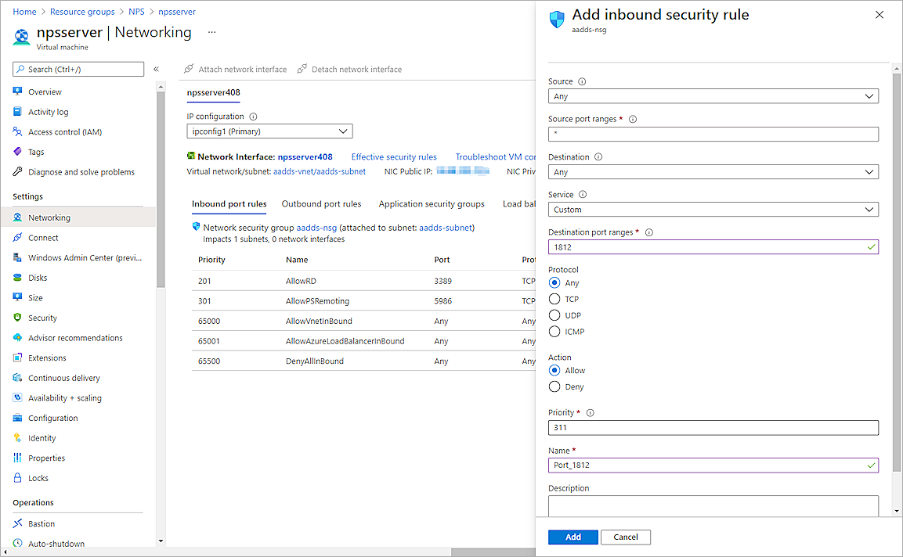
Configure Microsoft NPS Server
To enable users synced from Azure Active Directory to successfully authenticate with MS-CHAPv2, you must configure Microsoft Network Policy Server (NPS). NPS is required to validate the user credentials from MS-CHAPv2 requests against Azure Active Directory.
To configure Microsoft NPS Server:
- On the Windows server, run Server Manager.
- Select Tools > Network Policy Server.
The Network Policy Server console appears. - Select RADIUS Clients and Servers > RADIUS Clients.
- Right-click RADIUS Clients and select New.
The New RADIUS Client window appears. - In the Friendly name text box, type a name.
- In the Address (IP or DNS) text box, type the public IP address of the Firebox. In our example, the IP address of the Firebox is 203.0.113.2.
- In the Shared secret and Confirm shared secret text boxes, type a shared secret key. This key is used to communicate with the Firebox.
You must use the same shared secret key when you configure your Firebox resource in the Configure a Firebox Resource section.
- Click OK.
- Select Policies > Connection Request Policies. Make sure the default policy is enabled.
- Right-click Network Policies and select New.
The New Network Policy window appears. - In the Policy Name text box, type a name for this policy. In our example, we type ecotest.
- Click Next.
- In the Specify Conditions section, click Add.
- Select User Groups. Click Add > Add Groups.
- In the Enter the object name to select text box, type the group name. The name of this group must match the name of the Azure Active Directory group your users belong to.
- Click Check Names. If the Enter Network Credentials window appears, you must enter the login information for an account with permissions for the Azure AD domain.
- To return to the New Network Policy window, click OK three times.
- Click Next.
- Click Next.
- In the Configure Authentication Methods section, clear the User can change password after it has expired check box.
- Click Next.
- Click Next.
- Click Next.
- Click Finish.
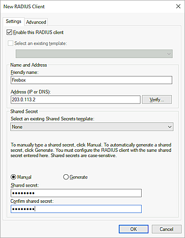
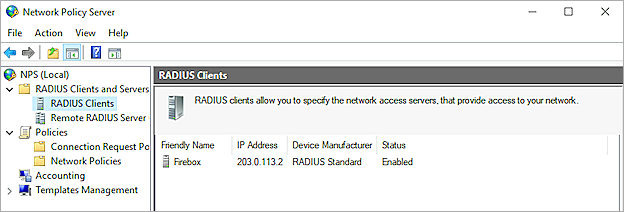
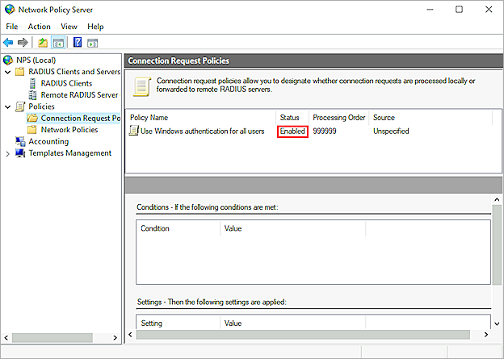


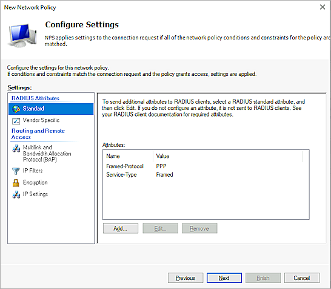
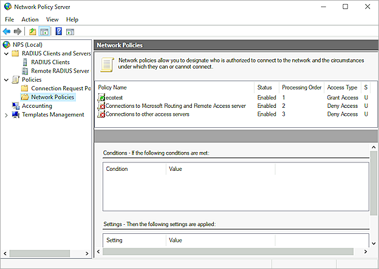
Configure AuthPoint
Before AuthPoint can receive authentication requests from the Firebox, you must:
- Add the Firebox as a Firebox resource in AuthPoint.
- Add an authentication policy for the Firebox resource or add the Firebox resource to an existing authentication policy.
- (Optional) Add users and groups.
Configure a Firebox Resource
From the AuthPoint management UI:
- From the navigation menu, select Resources.
- From the Choose a Resource Type drop-down list, select Firebox. Click Add Resource.
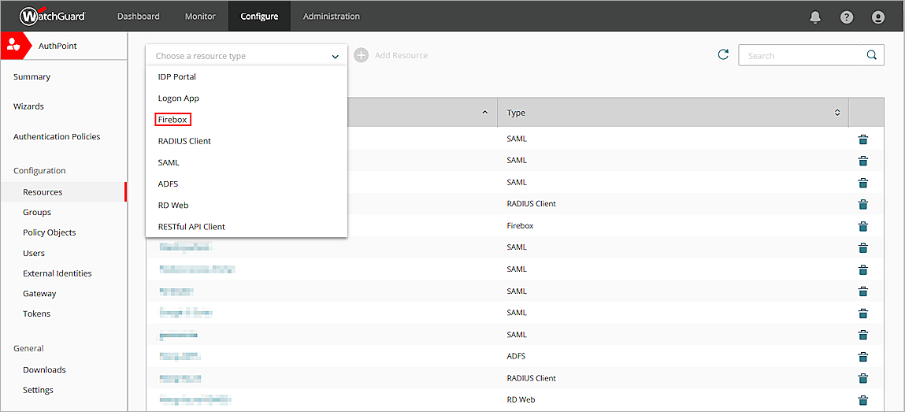
- In the Name text box, type a descriptive name for the resource.
- From the Firebox drop-down list, select the Firebox that you want to connect to AuthPoint. This list only shows Fireboxes and FireClusters that you have added to WatchGuard Cloud, and the device status in WatchGuard Cloud must be Connected.
- To configure the Firebox resource to accept MS-CHAPv2 authentication requests, click the Enable MS-CHAPv2 toggle.
Additional fields appear. - In the NPS Firebox Server trusted IP or FQDN text box, type the public IP address or fully qualified domain name (FQDN) of the NPS RADIUS server.
- In the Port text box, type 1812.
- In the Timeout In Seconds text box, type 60.
- In the Shared Secret text box, type the shared secret key that you specified in the Configure Microsoft NPS Server section.
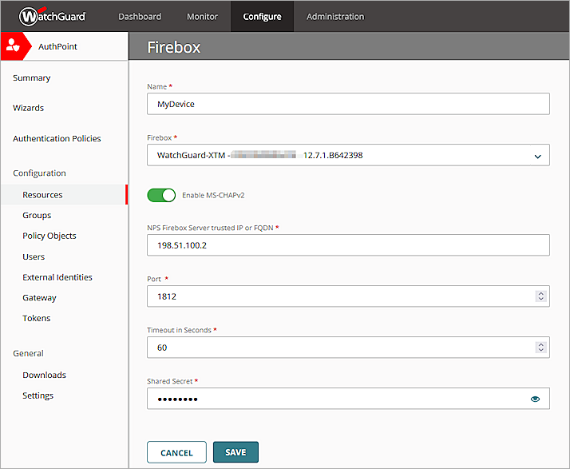
- Click Save.
After you add the Firebox resource in AuthPoint, the AuthPoint authentication server on your Firebox is enabled. When you configure Mobile VPN with IKEv2 on the Firebox, you must add the AuthPoint authentication server to your Mobile VPN with IKEv2 configuration.
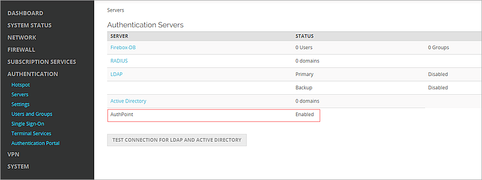
Add a Group in AuthPoint
You must have at least one user group in AuthPoint to configure MFA. If you already have a group, you do not have to add another group.
To add a WatchGuard Cloud-hosted group to the WatchGuard Cloud Directory:
- Go to Configure > Directories and Domain Services.
- Click the WatchGuard Cloud Directory domain name. If you have not yet added the WatchGuard Cloud Directory, click Add Authentication Domain and select the WatchGuard Cloud Directory.
The New Group page appears.

- In the Groups tab, click Add Group.
- In the Group Name text box, type a descriptive name for the group.
- (Optional) In the Description text box, type a description of the group.

- Click Save.
Your group is added to the WatchGuard Cloud Directory and to AuthPoint.
Add an Authentication Policy to AuthPoint
Authentication policies specify which resources users can authenticate to and which authentication methods they can use (Push, QR code, and OTP).
You must have at least one authentication policy in AuthPoint that includes the Firebox resource. If you already have authentication policies, you do not have to create a new authentication policy. You can add this resource to your existing authentication policies.
Users that do not have an authentication policy for a specific resource cannot authenticate to log in to that resource.
To configure an authentication policy:
- From the navigation menu, select Authentication Policies.
- Click Add Policy.

- Type a name for this policy.
- From the Select the authentication options drop-down list, select Authentication options and select the Password and Push check boxes.
QR code authentication is not supported for Firebox resources.
OTP authentication is not supported for MS-CHAPv2 Firebox resources.

- Select which groups this policy applies to. You can select more than one group. To configure this policy to apply to all groups, select All Groups.
- Select the resource that you created in the Configure a Firebox Resource section. If you want this policy to apply to additional resources, select each resource this policy applies to. To configure this policy to apply to all resources, select All Resources.

-
(Optional) If you have configured policy objects such as a Network Location, select which policy objects apply to this policy. When you add a policy object to a policy, the policy only applies to user authentications that match the conditions of the policy objects. For example, if you add a Network Location to a policy, the policy only applies to user authentications that come from that Network Location. Users who only have a policy that includes a Network Location do not get access to the resource when they authenticate outside of that Network Location (because they do not have a policy that applies, not because authentication is denied).
Policies that have a Network Location apply to Firebox resources.
If you configure policy objects, we recommend that you create a second policy for the same groups and resources without the policy objects. The policy with the policy objects should have a higher priority.

- Click Save.
Your policy is created and added to the end of the policy list.When you create a new policy, we recommend that you review the order of your policies. AuthPoint always adds new policies to the end of the policy list.

Sync Users to AuthPoint from Azure Active Directory
To sync users from Azure Active Directory, you must add an Azure AD external identity in the AuthPoint management UI.
In AuthPoint, Azure AD external identities represent external user databases. They connect to user databases to get user account information and validate passwords. The queries you add to an external identity specify which users to sync from your Azure Active Directory database. They pull user information and create AuthPoint user accounts for the users that are found.
For detailed instructions to sync users from Azure Active Directory, see Sync Users from Azure Active Directory.
Configure the Firebox
To configure the Firebox:
- Select VPN > Mobile VPN.
- In the IKEv2 section, click Manually Configure.
- Select the Activate Mobile VPN with IKEv2 check box.
- In the Firebox Addresses section, click Edit.
- From the Type drop-down list, select Firebox-Generated Certificate.
- In the Domain Name or IP Address section, type the external IP address of the Firebox.
- Click Add.
- Click OK.
- Select the Authentication tab.
- In the Authentication Server section, from the drop-down list, select AuthPoint. Click Add.
- In the Authentication Server list, select the AuthPoint authentication server and click Move Up to move it to the top of the list and make it the default authentication server.
Mobile VPN with IKEv2 uses the default authentication server unless a user specifies an authentication server on the Mobile VPN with IKEv2 client. - In the Users and Groups section, from the Create new drop-down list, select the AuthPoint authentication server.
- From the adjacent drop-down list, select Group.
You can add a user or a group. In our example, we add a group.
- Click Add.
The Add User or Group window appears. - For Type, select Group.
- In the Name text box, type a name for the group. The name of this group must match the group name in AuthPoint.
If you add a user, the name of the user must match the name of the Azure Active Directory user.
- From the Authentication Server drop-down list, select the AuthPoint authentication server.
- Click Save.
Your new group is added to the Users and Groups list. - Click Save to save your configuration.
- Select VPN > Mobile VPN.
- In the IKEv2 section, select Client Profile > Download.
- Extract the .TGZ file to your Windows 10 computer and find the Windows_8.1_10 folder.
- Run the WG IKEv2.bat file.
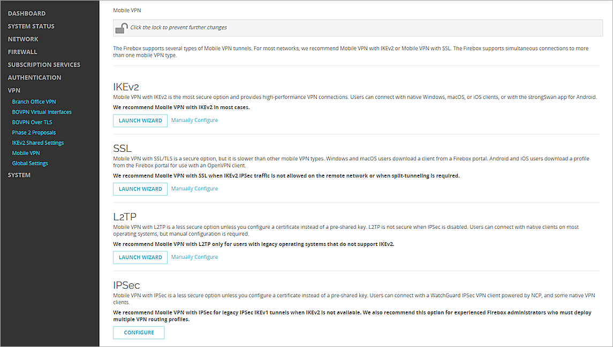
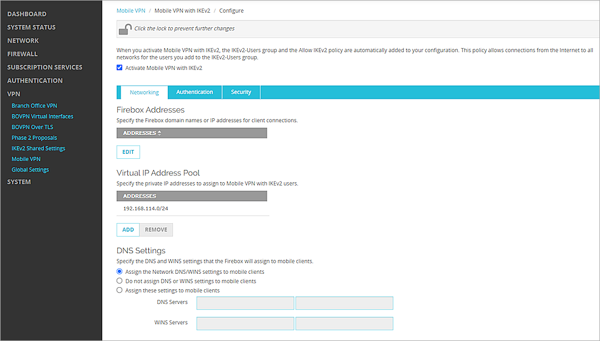
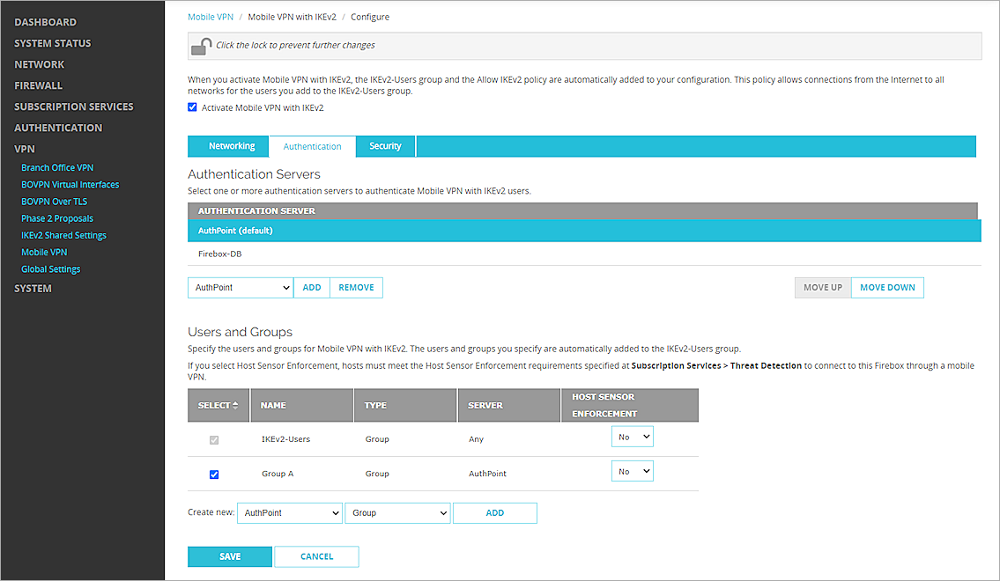
Test the Integration
To test the integration of AuthPoint and the configuration of your Mobile VPN with IKEv2, you authenticate with a mobile token on your mobile device. For Firebox resources with MS-CHAPv2 enabled, you authenticate with a push notification (you receive a push notification in the mobile app that you must approve to authenticate).
- From a Windows 10 computer, open the Windows menu and select Settings.
- Select Network & Internet > VPN.
- Select your VPN connection and click Connect.
- Type your user name and password.
- Approve the authentication request that is sent to your mobile device.
The VPN connects successfully.
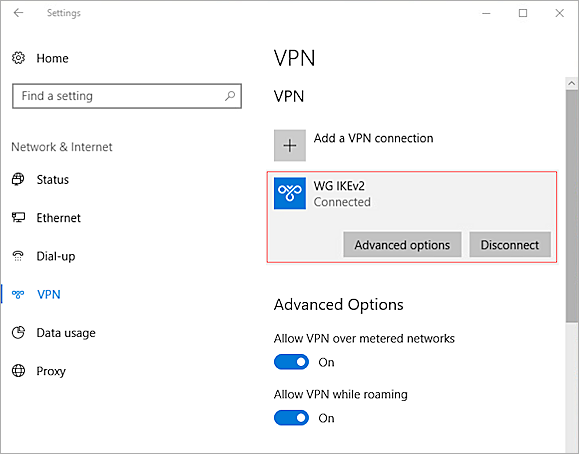